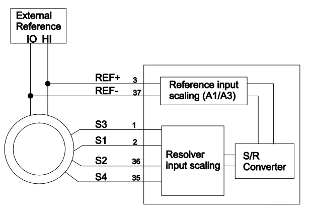
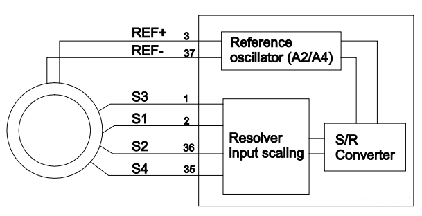
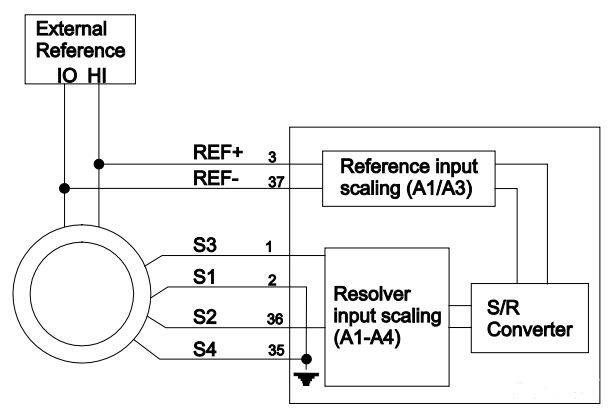
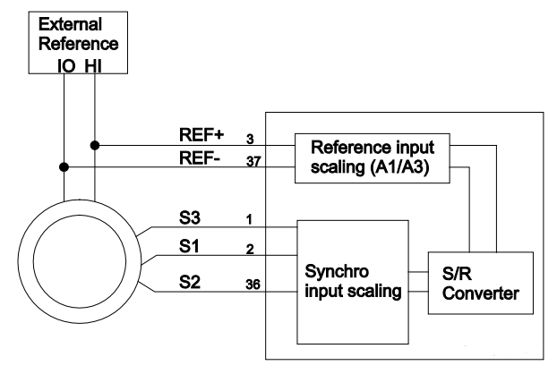

IO423 Usage Notes — Usage information about the I/O module
This section describes the different connection methods and the digital input circuit for the IO423.
Resolver with external reference (SCA-A1-XX and SCA-A3-XX)

Resolver with internal reference (SCA-A2-XX and SCA-A4-XX)

Single ended resolver with external reference (SCA-A1-XX and SCA-A3-XX)

Synchro with external reference (SCA-A1-XX and SCA-A3-XX)
